In this case study I analysed the JetBrains AI Plans & Pricing page on their website in order to understand the difficulties that programmer users face when they open the page to choose the correct AI Plan for them – the perfect one that will match their needs.
Goal
The goal of this project was to understand if such a problem really exists and try to fix it.
Caution
The final redesigned page is not a way to point to mistakes of the JetBrains design team – this is an alternative design architecture designed by me in order to help JetBrains customers find answers to their questions.
Among JetBrains AI users there is an opinion that the AI plans, AI Credits mechanics and tiers are not understandable and transparent for users. Users do not buy plans because they know what they want but intuitively – based on their experience. While the goal of the user interface and experience is to make the way from searching and understanding to buying as easy as possible.
In this project I attempted to address this specific problem in order to fix the informational architecture of the AI plans and pricing page on the JetBrains website. This project’s spectrum of work is only this one page.
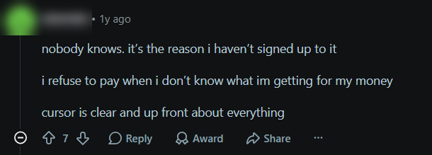
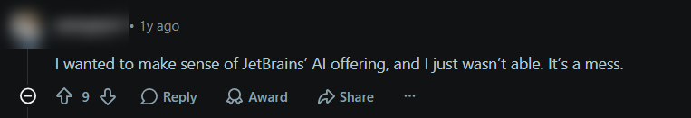
Comments from r/Jetbrains · nicknames and avatars blurred
02Challenge
Challenge
As users were referring to, the AI Plans pricing page was also confusing for me as some information I needed to get was either lacking or hidden deeper in the website, while to fix the problem I also needed correct answers that I needed to find.
Information lackingHidden deeper in the websiteCorrect answers needed
03Solution
Solution
The final product is a redesigned JetBrains AI Plans pricing page with simple solutions for every problem. I rebuilt the informational architecture and added new user interactions to the page to make it more readable and clearer for every type of user with different knowledge levels and access.
To find a correct solution I analysed several dozen opinions of professionals from the IT industry who used or are using JetBrains AI to gather as much correct information as possible about the real problems professionals face.
The prototype is built for a desktop screen, so it opens in its own tab.
AI Plans & Pricing · redesign conceptLive prototype
Try itSwitch Individuals ↔ OrganizationsOpen “What’s included”Click a footnote ¹ and jump back ↩Explore the FAQ
04Impact
Impact
My redesigned page version was primarily focused on bringing more transparency and clarity to the page while bringing and structuring more information about JetBrains AI products.
Among the main impacts I can highlight:
Decreased cognitive load
Easier architecture with newly structured information
Better page readability
New user interactions
Higher client conversion
05Research
Research
Before starting the project I wanted to feel the problem customers are describing by myself. In order to do that I opened the JetBrains website and analysed each corner of it while recording myself and my screen, commenting on everything I see and experience honestly, emphasising what I understand and what I don’t – thus, later I was able to rewatch the recording and highlight the exact places on the website that confused me and to make notes.
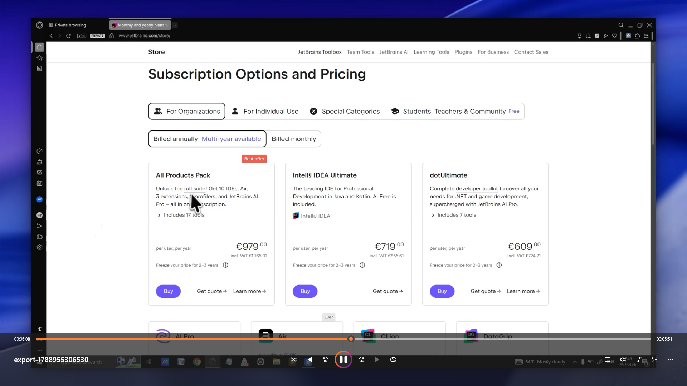
Research documentation · still from my recorded walkthrough of the JetBrains website
Step 1Self-test
Five questions from real Reddit pain points, answered using only the JetBrains website.
Step 2Rate & verify
Confidence in each answer from 1 to 5 stars, then checked against official sources.
Step 3Compare
My confidence next to the officially confirmed answers.
Step 1
Answering users’ questions by myself
As a first step, while analysing the website for myself before any real target audience analysis, in order to analyse it correctly I found the main problems users are referring to and wrote them down without searching for answers – because the goal was to try to answer them by myself without any external help, and if I wasn’t able to do so – that means the problems people are talking about are real.
As a primary source of information I used the official JetBrains Reddit forum, trying to gather the main pain points while making User Personas based on different user types I saw there.
Likes to try new features and explore new ways of working effectively
Tech-obsessed
Work characteristics
01Uses AI assistance a lot
02AI enthusiast
Pain points
Doesn’t understand how tokens work — uses them intuitively, based on experience
Needs
Easy-to-use AI assistance
Clearly explained prices for AI credits
Sam
The time-pressed pro
ExperiencePro · Senior
IncomeHigh income
Personality
Gamer and pop-culture nerd
Programmer
Work characteristics
01Professional worker
02Knows a lot about how AI works and how to get the most out of it
03Has no time to think twice
04Likes things done fast and transparently
Pain points
Doesn’t understand how tokens work — uses them intuitively, based on experience
Needs
More information about IDEs and AI, to use them to their full potential
Maria
The curious beginner
ExperienceLittle experience · Beginner
IncomeAverage income
Personality
Vibe-coder
Work characteristics
01Absolute beginner with IDEs and AI assistants
Pain points
Doesn’t understand how to use AI in IDEs correctly
Doesn’t understand how tokens work
Loses track of usage
Needs
To understand AI tiers in general
To understand how tokens work
To have a transparent AI credits system
Questions I formulated to answer
01What do I get in each AI tier?
02What exactly is a credit and how many does a normal week consume?
03If I already pay for an IDE subscription, do I get AI included or is it separate?
04What happens when credits run out mid-task?
05If I bring my own API key, what am I still paying JetBrains for?
I gave myself 45 minutes to answer all 5 questions.5 / 5 answered
The result
I got answers for all 5 questions, but it took so much time and effort to find an answer to such a question as “What exactly is a credit and how many does a normal week consume?”, while it is the basis for AI plans, because without AI Credits they are useless.
Step 2
Rating my own confidence
After I got as much information from the JetBrains website for each question as was possible I started a second phase – critical evaluation of the gathered information and whether it was correct.
But before I started I gave each of my answers from 1 star to 5 stars depending on how confident I was in this answer – 1 very bad, 5 – absolutely sure that it’s true.
1 – very bad5 – absolutely sure that it’s true
The final result was:
What do I get in each AI tier?
What exactly is a credit and how many does a normal week consume?
If I already pay for an IDE subscription, do I get AI included or is it separate?
What happens when credits run out mid-task?
If I bring my own AI key, what will I pay JetBrains for?
After individual confidence evaluation, I started the checking process to find which questions I answered correctly based on the JetBrains website and which not. In order to do that I used the internet and official forums about JetBrains to find a real correct answer for every listed question.
Step 3
Comparing my answers with reality
After checking if my answers are correct I attempted a comparison stage – my old answers and real officially confirmed answers.
At this stage I compared my confidence level for the old answers and changed it to a new one based on the official answers I got. The result:
Confidence vs. reality
My confidenceIn reality
01What do I get in each AI tier?
Only 3 stars in reality, because I pretty much understood what products I will get, but I had no idea that credits work the way users explained in the attached Reddit post.
02What exactly is a credit and how many does a normal week consume?
In reality 0 stars, because there is a hidden unexplained mechanic under credits I definitely need to know before I will buy anything, because credits are the main part of AI agents – without them they are useless.
In reality one credit can do much more than you think, and JetBrains doesn’t explain that in their tiers.
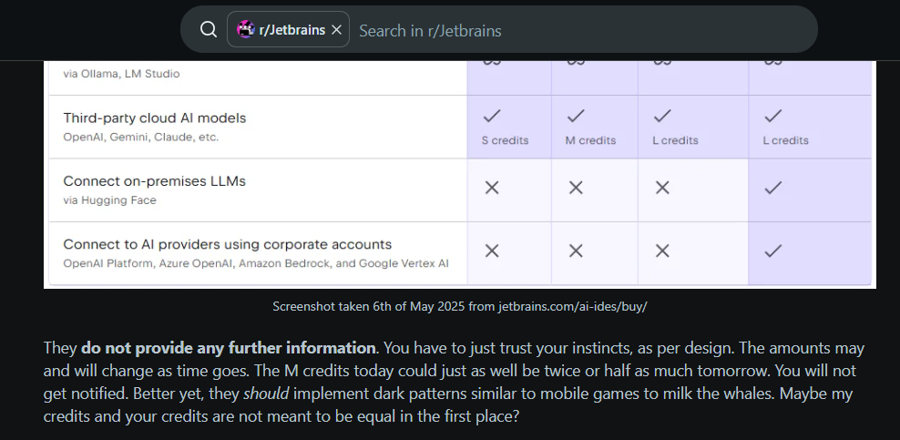
User on Reddit is saying that you never know how much quota you are buying – you can only see the size of it: S / M / L
03If I already pay for an IDE subscription, do I get AI included or is it separate?
0 stars in reality, because if you have a paid single IDE license version you will not have full access to AI in it, because to have full AI you need to pay a separate JetBrains AI subscription. Yes, all JetBrains IDEs have AI inside. Only All Products Pack and dotUltimate include JetBrains AI Pro at no extra charge. And on their website they are saying that the IDE will have AI inside – because it will, but not the full version, and JetBrains doesn’t mention that anywhere.
The answer is on the IDE’s page description
04What happens when credits run out mid-task?
Then the JetBrains AI will pause the task until renewal or additional credits purchase.
This answer is located in the FAQ, not in the tiers description
05If I bring my own AI key, what will I pay JetBrains for?
When you connect your own AI, you must use a separate subscription for your own AI, and then you also pay the AI producer for AI, not only JetBrains. There is no information about what you pay JetBrains for in this situation, but logically, you won’t pay them if you use your IDE for non-commercial use, and pay for the IDE only for commercial use.
06Problem analysis
Problem analysis
Based on my research I noted what problems I had and then headed to JetBrains forums and tech support again to make a detailed analysis of all existing most popular problems connected to the AI plans and Pricing page.
As a result, I got a list of problems:
01Credit value is invisible
People don’t understand why prices of AI credits are so high because they don’t see the real value behind each credit
02Plans can’t be compared
People don’t understand the real differences behind the plans and cannot compare them correctly because of the lack of important information about each plan pack and for whom it was mainly designed → this leads to mistaken purchases based on intuition, not decision
03The FAQ misses real questions
FAQ questions displayed on a website do not match the real questions people have, such as “What is the right plan for me?”
04Token usage is unclear
People don’t understand how tokens work, which tasks require token usage and which do not
05Credit value changes
The value of a JetBrains AI Credit varies over time and users are getting confused by this, while GitHub openly mentions possible value/price changes
User’s decision map
That helped me to build a user’s decision map for the webpage where I tracked their every confusion and emotional state they are facing to emphasise what is important and prepare material for a correct redesign direction.
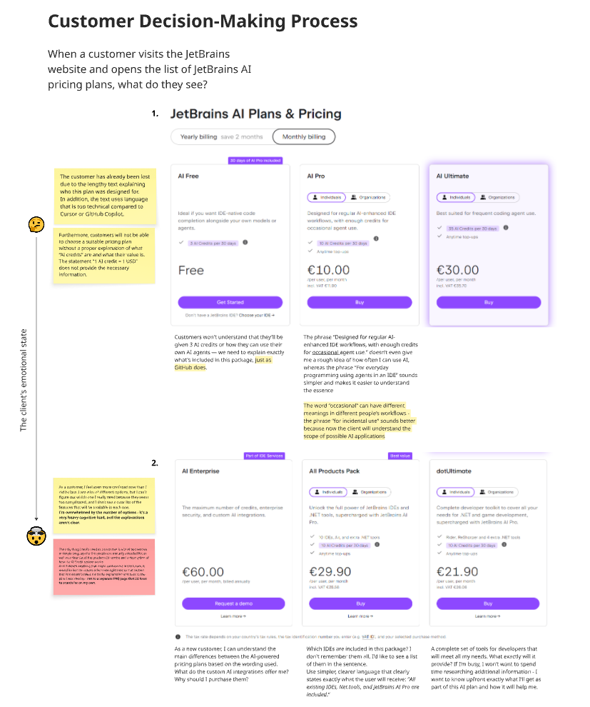
Customer decision-making process · confusion and emotional state tracked across the original page
07Competitors
Comparing competitors analysis
With the list of confirmed pain points I headed to JetBrains competitors in the AI assistance industry in order to analyse their webpage architecture, patterns and user interactions they chose.
GitHub and Cursor are the main competitors in this field; also they were mentioned multiple times by JetBrains users with statements that their architecture is clearer for them.
GitHub CopilotCursor
Goal
At this stage my main goal was to analyse and compare patterns different organisations are using to emphasise the UX/UI decisions that work the best for users.
Chosen directions
After the analysis I found out that Cursor and GitHub Copilot were using very similar patterns and webpage architecture.
01Simple, descriptive, non-technical language in descriptions
02Listed key features for each plan displayed
03Encourage user questions and display them in accessible places, regardless of the complexity or length of the answer, in order to prevent future confusion
04Intuitive supportive navigation and product display
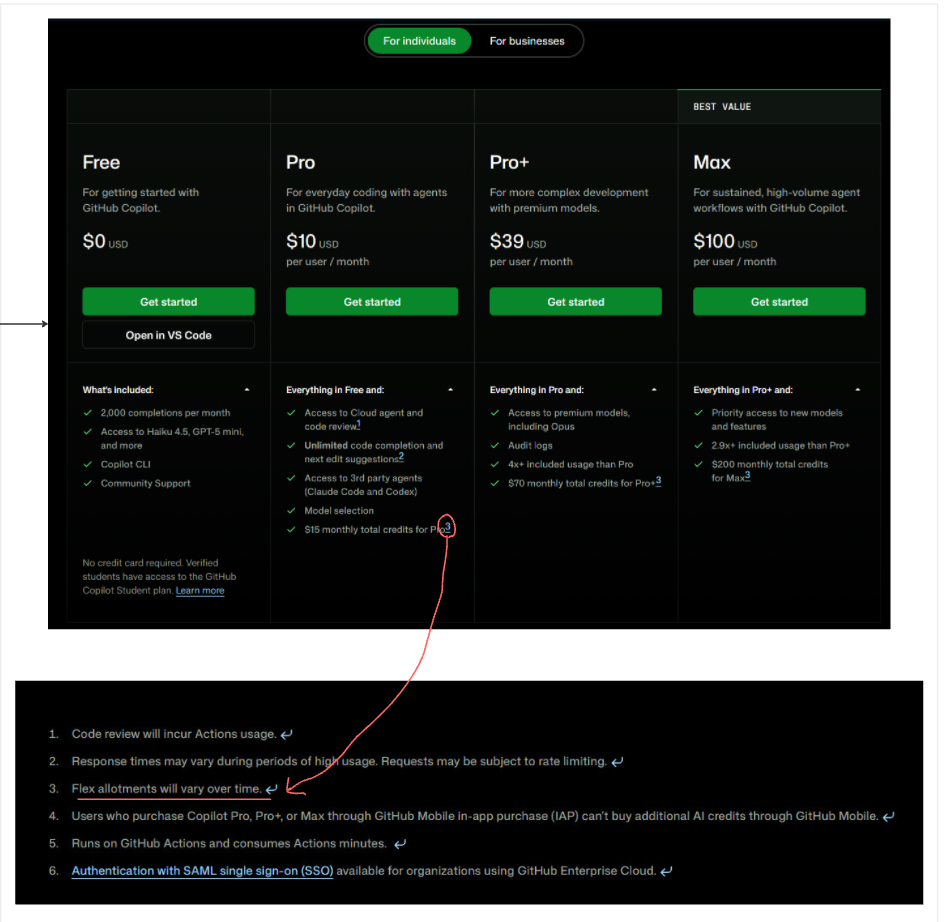
GitHub Copilot · plan cards and numbered footnotes, with my notes
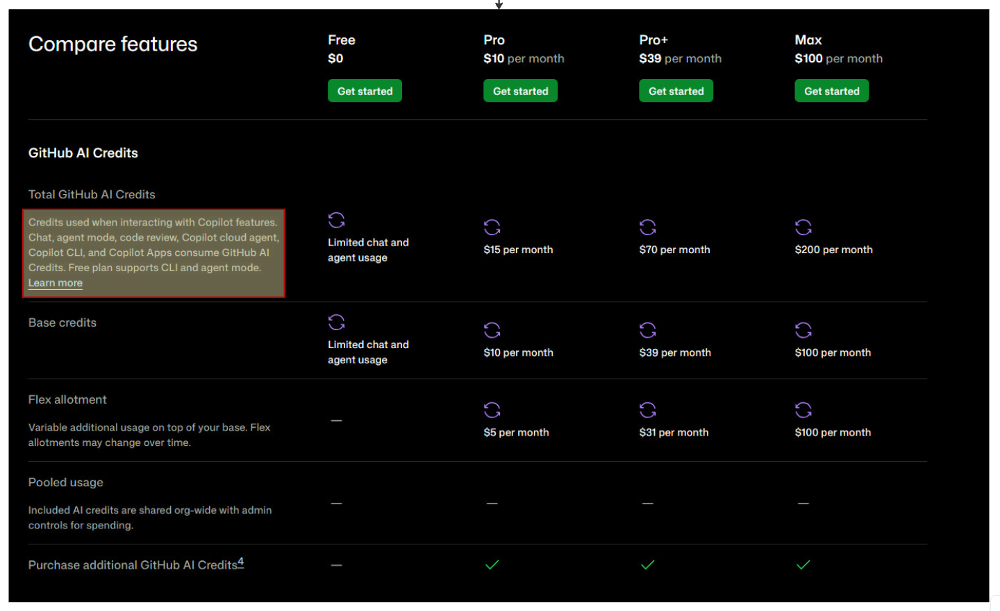
GitHub Copilot · credits explained right in the comparison table
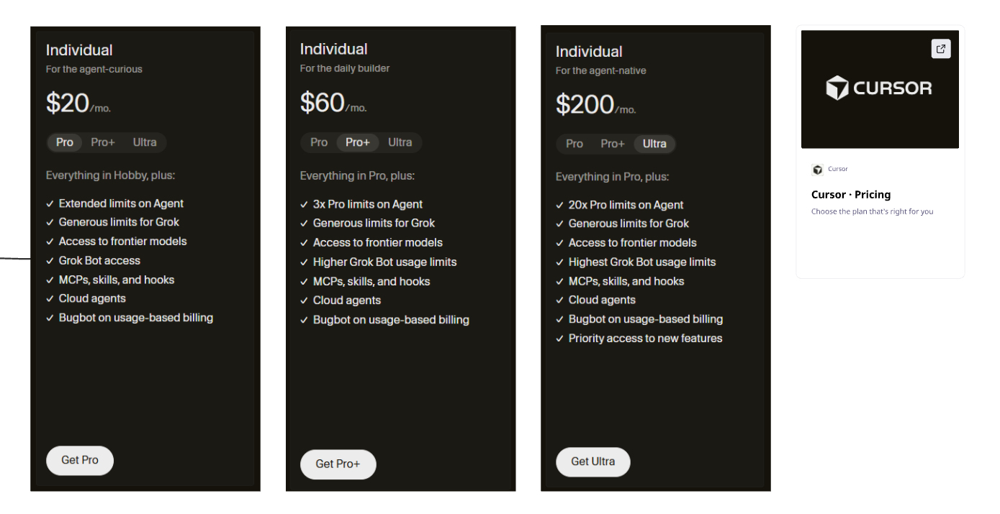
Cursor · short audience line and key features per plan
08Wireframing & prototyping
Wireframing & Prototyping
Before attempting wireframing I found a solution for every pain point, based on my competitors analysis, using methods and patterns that work.
To fix JetBrains AI plans’ confusion in customers:
01
Text
Make the text shorter and easier to read for everyone, explaining what the purpose of this AI plan was.
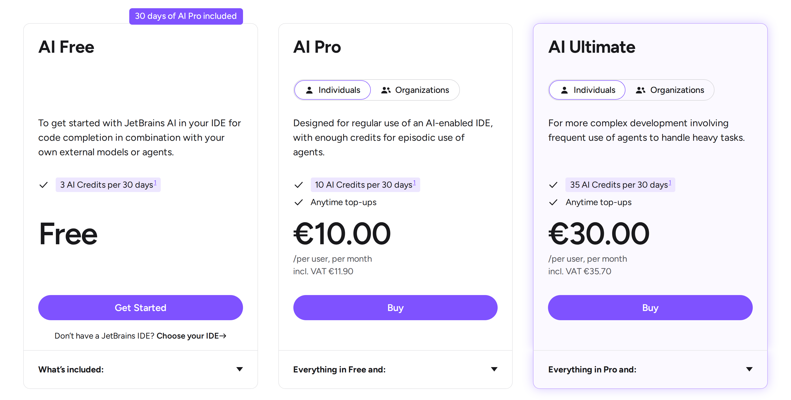
Short, audience-first descriptions on every plan
02
The AI Credits value
Instead of an “i” hover button with the “1 AI Credit = 1 USD”, add a footnote next to each AI Credit mention that leads to the explanation of the value of 1 AI Credit and what the customer can do with it; the text in the explanation can be longer but it must exist, that will also explain the price for AI Credits and show that 3/10/35 AI Credits is a lot – explanation beats confusion. Remember to add a return button that returns the user from the explanation to the place on the page they were taken from.
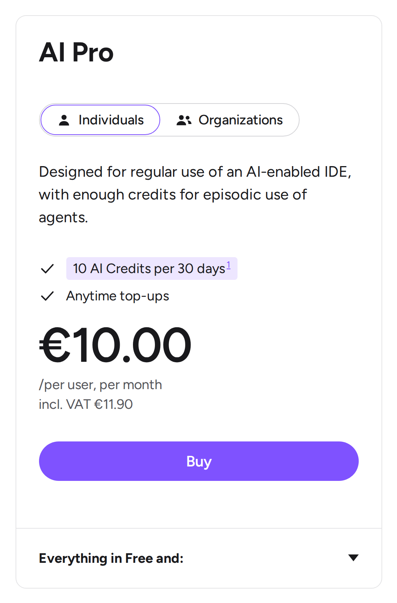
Credit mentions link to ¹
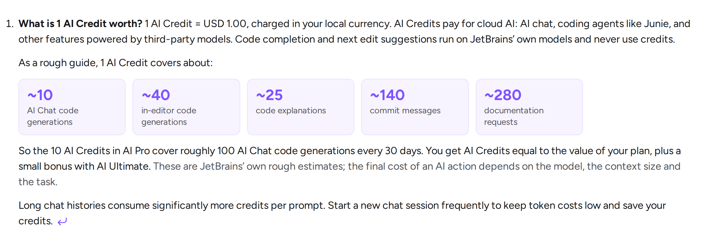
Footnote ¹ explains the value · ↩ returns to the exact mention
03
Product list
If you mentioned the products in the offer, add a list of these products that I will get – if this is an IDE, show me an icon of the IDE; if this is an AI, write down the exact AI mode I will get; if this is access to the Pro plan, mention that I will get it in the list transparently.
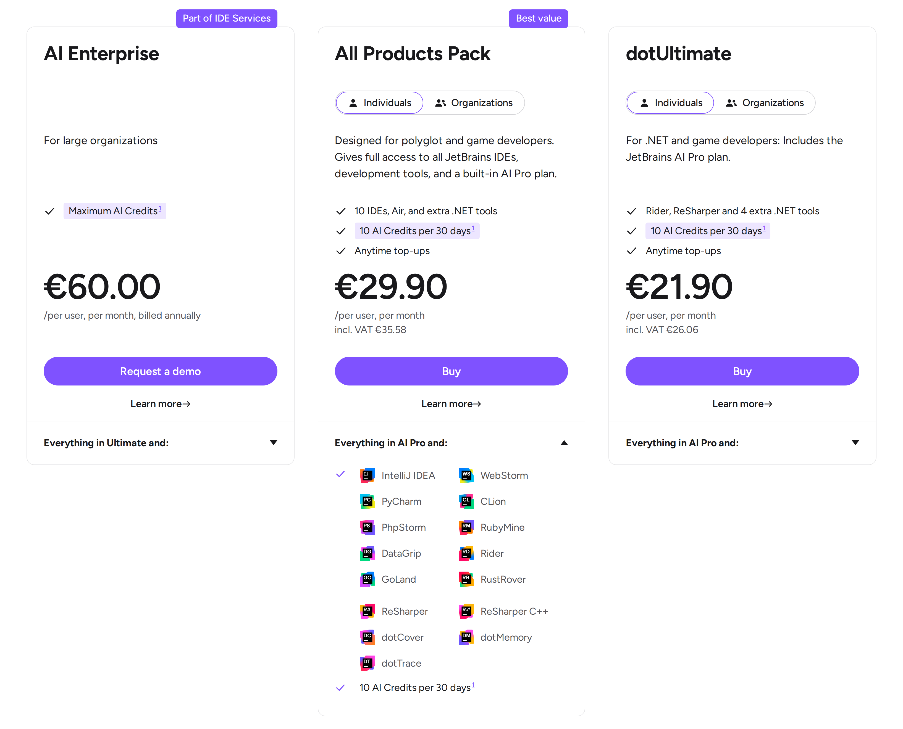
Only the opened plan expands · every included product listed with its icon
04
Footnotes
If there is something very specific about the plan or it is a general thing about all plans, add a footnote with a number that will lead the user to the bottom section of a page where all referenced questions were answered with numbered footnotes, and add a button that will return me back to the place I was looking at.
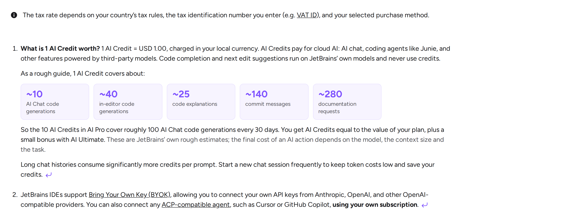
Numbered footnotes at the bottom of the page, each with ↩
05
FAQ
Other questions connected to Plans & Pricing, Privacy, AI models details and others – add to the FAQ section on the same page with AI plans; give people instant access to it without forcing them to open a separate page.
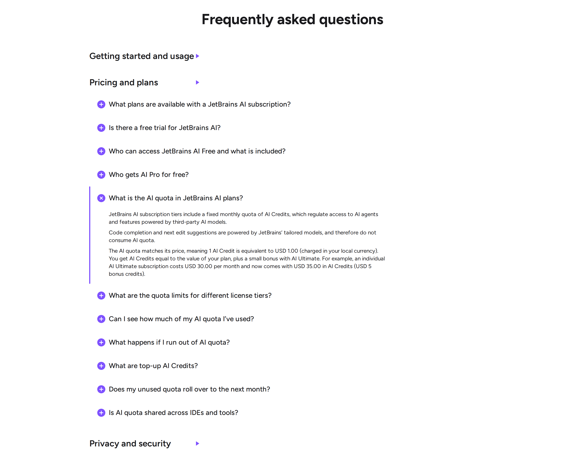
FAQ on the same page · the purple marker travels from category to open answer